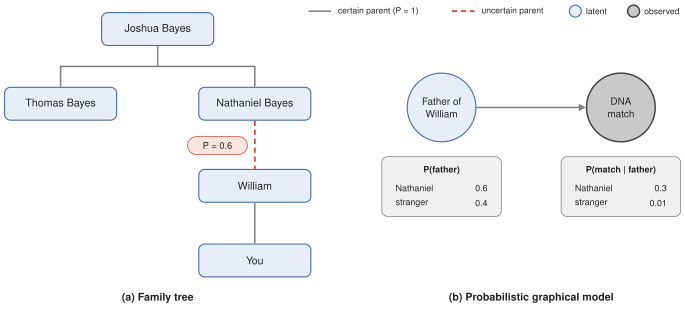
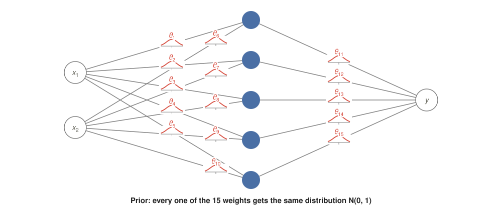
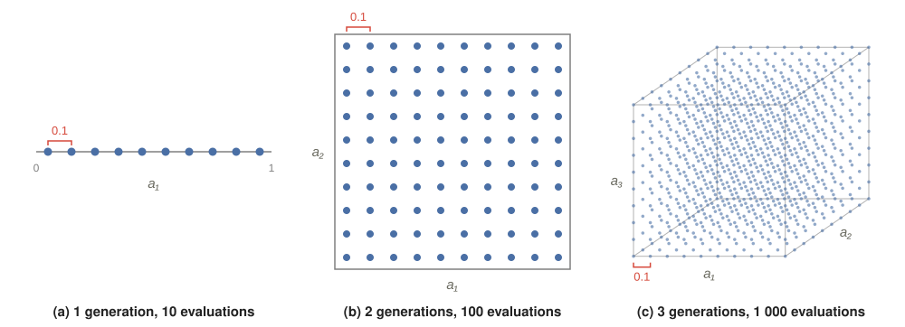
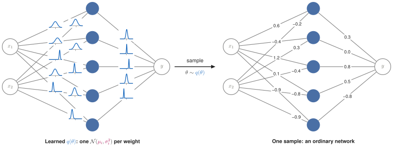
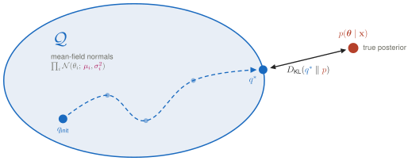
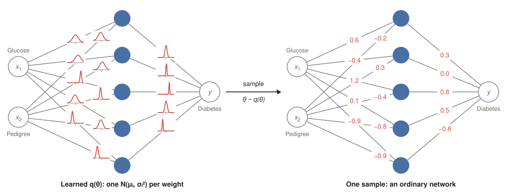

Series 4 parts · one page
Probabilistic Programming with Pyro Draft
Part 1What is Probabilistic Programming? Draft
Why a language for probabilities?
Initially the term "probabilistic programming" sounds vague, at least that was my experience. Why do we need a programming language for probabilities, can we not just do this in standard languages already? It only started to make sense when I thought about it as a declarative language (think Prolog), that lets you specify probabilistic processes and models and allows you to perform inference and optimization automatically.
In essence, it just gives you the declarative tools for distributions, sampling procedures, evidence etc. and standard tools for optimization, such that you can run arbitrary probabilistic models. In Prolog, we would define facts and rules, in Pyro we define a probabilistic process. Likewise, when running a query in Prolog, the engine performs backtracking automatically (thus inferring the solution). The equivalent in Pyro is the inference via e.g., stochastic variational inference (SVI).
This article is my way of learning the fundamentals of Pyro, by documenting my understanding along the process and coming up with examples for myself.
Example: Are you related to Thomas Bayes?
Consider the following example (fictional): You want to infer whether you share a common ancestor with Thomas Bayes. However, you are unsure if your father (William Bayes) is descended from one of Thomas Bayes' brothers, or from another Bayes family. Still, you have estimates for how likely the relationship is: Let’s assume Nathaniel was one of only two men named Bayes of fathering age in the area where William grew up, the other belonging to an unrelated Bayes family. Refer to Figure (a) below for an overview.

William naming his eldest son Nathaniel shifts the odds from 1:1 to 1.5:1. Furthermore, a DNA test shows that you share a stretch of DNA with a known descendant of Joshua Bayes. This results in the probabilistic model depicted in (b), with the following numbers (for illustration, not realistic):
- Prior:
- Match if related:
- Match if not related:
Attempt 1: Prolog
You might define the Prolog program as follows to get an answer to your question. Prolog would then backtrack to find you the solution that satisfies all constraints.
Prolog Model
We initialy define the two possible outcomes (world): Nathaniel is Williams father or he is a stranger.
world(nathaniel_bayes).
world(stranger).
We define the predicates that hold in our example, that is we know that Thomas and Nathaniel are siblings in any world (_), that william is your father in any world
and that there is different possible fathers for william (worlds W).
parent(_, joshua_bayes, thomas_bayes).
parent(_, joshua_bayes, nathaniel_bayes).
parent(_, william, you).
parent(W, W, william).
We can also define what an ancestor is. Here we say its either a parent directly or recursively in the same world.
ancestor(W, A, X) :- parent(W, A, X).
ancestor(W, A, X) :- parent(W, P, X), ancestor(W, A, P).
Being related means that two people are linked by an ancestor in the same world.
related(W, X, Y) :- ancestor(W, A, X), ancestor(W, A, Y).
We also define that we observed a DNA match.
observed(dna_match).
Now we can check which world is valid. Initially we need to define that W is actually a world.
Then we define a rule to decide what valid means.
Here -> is indicating an if-then-else. So if we observe a dna_match, world W is valid
if in this world you are related to Thomas Bayes. We only search for the first valid world W, thus
the once statement.
valid(W) :-
world(W),
(observed(dna_match) -> once(related(W, you, thomas_bayes)) ; true ).
However, as you noticed, in plain Prolog, we cannot infer how probable each scenario is exactly, since we can only work with facts.
We simply drop the probabilities and treat the DNA match as a hard fact, therefore Prolog will respond with W = nathaniel_bayes for the query valid(W).
Attempt 2: Pyro
In Pyro, we instead define a probabilistic model, a guide, and an inference procedure.
The generative model
Here we simply model the generative process by sampling that Nathaniel is William's father with 60% probability.
We then say the probability of a match depends on whether Nathaniel is the father (torch.where), using the sampled fact to select this probability.
Finally, we provide our observation that there was in fact a DNA-match observed using pyro.sample with obs=....
Calling model() will result in one sample from the model.
6 import lines
import torch
import pyro
import pyro.distributions as dist
from torch.distributions import constraints
from pyro.infer import SVI, Trace_ELBO
from pyro.optim import Adam
def model():
nathaniel = pyro.sample("nathaniel_is_father", dist.Bernoulli(0.6))
p_match = torch.where(nathaniel.bool(), torch.tensor(0.3), torch.tensor(0.01))
pyro.sample("dna_match", dist.Bernoulli(p_match), obs=torch.tensor(1.0))
The guide
The guide is our current estimate of the posterior, i.e.,
It samples the same latent variable as the model (nathaniel_is_father), but with a learnable probability q instead of the prior.
def guide():
q = pyro.param("q", torch.tensor(0.5), constraint=constraints.unit_interval)
pyro.sample("nathaniel_is_father", dist.Bernoulli(q))
Inference with SVI
Using SVI, we iteratively update the guide to maximize the evidence lower bound (ELBO), which moves it closer to the true posterior. Note that here we explicitly define how we infer our posterior as opposed to implicitly backtracking in Prolog. In this example we could calculate the solution analytically, but this is not possible in some complex models.
pyro.clear_param_store()
svi = SVI(model, guide, Adam({"lr": 0.01}), Trace_ELBO(max_plate_nesting=0))
for step in range(20_000):
loss = svi.step()
print(f"P(Nathaniel is father | DNA match) = {pyro.param('q').item():.3f}")
Output
P(Nathaniel is father | DNA match) = 0.985
Although it would be possible to get the exact solution with Pyro, the example shows standard SVI for simplicity. Here, we iteratively step towards better posteriors (q) using gradient descent with an Adam optimizer. Due to noisy gradients, our estimate for the posterior will still be an approximation and not exact.
Checking against the exact answer
For reference, we can calculate the exact solution by applying Bayes' rule. First, we calculate the marginal probability of a match (the evidence) by summing over the hypotheses for William's father.
Then we get the posterior by plugging everything into Bayes' rule.
We can see that our approximation using SVI is in the ballpark, but not terribly accurate.
Since our guide (a Bernoulli with free parameter q) can represent the exact posterior, the gap is caused by poor optimization:
There would be ways to mitigate this, but we won't consider them here for simplicity.
Summary
In summary, we can think of Pyro as a declarative language, similar to Prolog, that allows us to reason about uncertainty and gives us tools for inference. So far we treated SVI and the ELBO as a black box that "moves the guide closer to the posterior". In the next part we look at why we need them in the first place and what the ELBO actually optimizes.
Part 2Variational Inference Draft
Integrating is sometimes hard
In order to understand SVI and ELBO we first need to understand why these tools are actually needed. Coming from a deep learning background I feel like an intuitive way to show this is using a simple Bayesian neural network with weights and data . We use uppercase letters for random variables and lowercase letters for their concrete values: the weights are a random vector , and is one particular setting of them. Likewise, is the data as a random variable and is the dataset we actually observed. When we write densities such as , this is short for the density of given , evaluated at .

A neural nework becomes Bayesian, if the weights are distributions instead of point estimates, such that we get a distribution over networks that we could sample from or such that we could model uncertainty better. We can write down the posterior (our belief about the weights after observing the data) easily using the Bayes rule:
However, we cannot directly calculate this posterior, since it would require us to integrate over all possible weights to calculate :
Why this is hard: If there is no closed-form solution for an integral (like here), we have to evaluate the function we want to integrate at certain points and then add the slices we get together to approximate the interval. However, if we want to evaluate with the same precision in higher dimensional functions, we need exponentially many evaluations of the function. So if we evaluate points for weights, we get evaluations, which is not feasible. If we assume our hardware can perform evaluations per second, it would take us around 32 years for all evaluations.

Estimating Posteriors
Now, there is two common ways to model the posterior when we cannot calculate the required probabilities by integration or closed-form. The first is sampling, where we estimate the posterior by sampling parameters for our posterior model (e.g., importance sampling, rejection sampling, MCMC, ...). The second is posing the problem as an optimization and using optimizers to find a good approximation for the posterior (variational inference). We will not go into depth on the difference of these approaches, but generally sampling becomes very expensive with big datasets, since sampled parameters require calculation of the likelihood using the complete dataset. However, there is a trade-off: sampling (MCMC) is asymptotically exact, which is not the case for SVI, but we can estimate gradients using a subset of the data easily, making it more scalable to large datasets.
Since we cannot integrate, we need a model of the posterior that we can optimize using some objective. Note that our unobserved (latent) variables are the weights . Therefore, we approximate the joint posterior over all weights. Our estimate for the posterior we will call from here on out. Unlike the prior, we model each weight with its own normal distribution (its own mean and variance), all independent of each other:
just states that we evaluate the normal density at value with mean and variance (the parameters of the normal distribution). The parameters and are what we will optimize.
Note the difference: is a concrete set of weights, i.e. one ordinary network. is a distribution over such sets, and are the parameters of that distribution. A normal network learns directly; a Bayesian network learns and . Every time we sample from , we get one concrete network.

Each edge has its own independent distribution (this is called the mean-field assumption). The true posterior also contains correlations between weights, e.g. if is large, might need to be small to produce the same output. Our ignores these correlations, which is one of the reasons it is only an approximation. In the end, we approximate the posterior as follows:
More intuitively, we search for the best approximation in the space of our possible posteriors according to some distance as visualized in the figure below.

Evidence Lower Bound (ELBO)
Now to compare our two distributions, we can use the KL-divergence, which is a distance measure between two probability distributions. In our example, it is defined as:
Here the expectation is over the random weights drawn from , which is why they are written in uppercase inside it. However, we cannot use this as an objective, since it would require us to calculate , which is exactly what we could not compute since we cannot compute :
Through rearanging the Kullback-Leibler (KL) divergence (not shown for simplicity), it can be written as follows:
This solving for we get the following:
What this means: does not depend on our approximation of the posterior, so its constant with regard to our optimization. Since it is a sum of the ELBO plus the KL divergence, if the ELBO increases, the KL divergence needs to decrease such that we get the same . Therefore we can simply maximize the ELBO in order to minimize the KL-divergence.
ELBO interpretation
Now, the above version of the ELBO is a bit hard to interpret. However, it turns out that it can be rearranged into a more intuitive form by a few steps. With the chain rule, we can split the joint probability of and and due to the log product rule, this becomes a sum:
Since the sum of expecations is equal to the expecation of the sum, we can split the expecations:
Now we have a difference between and in log space. This means we can apply the quotient rule to get a ratio of these. Looking back we can see that the expecation of a ratio of two distributions is exactly a KL-divergence, but the distribution we average over needs to be in the numerator. We can achieve this by negating and the quotient rule since .
Now the ELBO becomes a difference of the probability of the data given the parameters and the KL-divergence of our approximation of the posterior and the prior on the parameters .
This is generally interpreted as a objective with two components: reconstruction and regularization.
- Reconstruction: Rises with the likelihood of the data given the parameters. So the likelier our data given our model parameters, the higher this value.
- Regularization: Penalizes if our posterior approximation strays to far from our prior distribution. So this is a regularization.
The Mean-Field Assumption
Remember that we try to model the true posterior using a simpler drop-in . In principle, there could be covariance between our in the true posterior. However, the expectations in the ELBO require us to integrate over possible , which results in the same infeasible integral as before. With the mean-field assumption, we just say we can approximate the true posterior sufficiently by assuming that all our parameters are independently distributed. This means the joint distribution becomes factorizable, since independent probabilities can be multiplied to get the joint probability:
Due to this, the expectation can be taken for each variable separately:
Since the ELBO requires the expectation of the log, the product becomes a sum. An expectation of a sum is equal to the sum of expecations. So we can simply calculate the expectation for each weight separately, which we know how to, since each weight is normally distributed.
In the next part we will go over the Pyro fundamentals using this BNN as an example.
Part 3Pyro Fundamentals on the Example of a Bayesian Neural Network Draft
The Diabetes dataset
Below follows the code for the BNN model from the previous part in Pyro.
We start with the imports and some constants. We have 5 neurons in the hidden layer, two inputs and one output. Furthermore, we set the prior for the BNN parameters to a standard normal.
12 import lines
import torch
import pyro
import pyro.distributions as dist
from pyro.infer import SVI, Trace_ELBO
from pyro.optim import Adam
from sklearn.datasets import fetch_openml
from sklearn.model_selection import train_test_split
from sklearn.preprocessing import StandardScaler
import numpy as np
from pyro.distributions import constraints
from sklearn.metrics import f1_score
from pyro.infer import Predictive
DIM = 5
PRIOR = dist.Normal(0.0, 1.0)
IN_DIM = 2
OUT_DIM = 1
Next, we define what happens during a forward pass of the network:
def forward(x: torch.Tensor,
weights_hidden: torch.Tensor,
weights_out: torch.Tensor,
bias_h: torch.Tensor,
bias_o: torch.Tensor):
h = torch.matmul(x, weights_hidden) + bias_h
h = torch.relu(h)
y = torch.matmul(h, weights_out) + bias_o
return y
Then we define the generative model. This is where Pyro comes into play for the first time.
def model(x: torch.Tensor, y: torch.Tensor | None = None):
weights_hidden = pyro.sample("w_h", PRIOR.expand([IN_DIM, DIM]).to_event(2))
weights_out = pyro.sample("w_o", PRIOR.expand([DIM, OUT_DIM]).to_event(2))
bias_h = pyro.sample("b_h", PRIOR.expand([DIM]).to_event(1))
bias_o = pyro.sample("b_o", PRIOR.expand([1]).to_event(1))
logits = forward(x, weights_hidden, weights_out, bias_h, bias_o).flatten()
with pyro.plate("data", x.shape[0]):
pyro.deterministic("p", torch.sigmoid(logits))
return pyro.sample("y", dist.Bernoulli(logits=logits), obs=y)
What initially might be confusing is the pyro.sample here. The expand function here is necessary,
since the prior is univariate and would return just one dimension when sampling. However,
we want our weights to be a matrix, where each element is drawn independently from this prior.
The expand just allows us to add batch dimensions for the sampling. The to_event(2) denotes, that we
will treat the sampled weight matrix as a single random variable subsequently (joint), with the
argument indicating how many of the dimensions should be considered event instead of batch dimensions.
Subsequently the logits are calculated using the sampled parameters and a output is sampled using
a Bernoulli distribution with the logits as its parameters. If an observation is given, the outputs
are not actually sampled and the pyro.sample("y", dist.Bernoulli(logits=logits), obs=y)
will simply return the observation y. However, in the latter case, the statement will have the effect of marking this node
in the underlying bayesian network Pyro generates as observed and calculating how likely the observation is given
our current distribution (Bernoulli of the logits). This score is saved in the background and it corresponds to the likelihood of the ELBO
as previously introduced ($$$$).
def guide(x: torch.Tensor, y: torch.Tensor | None = None):
weights_hidden_loc = pyro.param("w_h_loc", torch.randn(IN_DIM, DIM))
weights_hidden_scale = pyro.param("w_h_scale", torch.full((IN_DIM, DIM), 0.1), constraint=constraints.positive)
weights_out_loc = pyro.param("w_o_loc", torch.randn(DIM, OUT_DIM))
weights_out_scale = pyro.param("w_o_scale", torch.full((DIM, OUT_DIM), 0.1), constraint=constraints.positive)
bias_h_loc = pyro.param("b_h_loc", torch.full((DIM,), 0.0))
bias_h_scale = pyro.param("b_h_scale", torch.full((DIM,), 0.05), constraint=constraints.positive)
bias_o_loc = pyro.param("b_o_loc", torch.full((1,), 0.0))
bias_o_scale = pyro.param("b_o_scale", torch.full((1,), 0.05), constraint=constraints.positive)
pyro.sample("w_h", dist.Normal(weights_hidden_loc, weights_hidden_scale).to_event(2))
pyro.sample("w_o", dist.Normal(weights_out_loc, weights_out_scale).to_event(2))
pyro.sample("b_h", dist.Normal(bias_h_loc, bias_h_scale).to_event(1))
pyro.sample("b_o", dist.Normal(bias_o_loc, bias_o_scale).to_event(1))

Each sample from gives a slightly different network and therefore a slightly different prediction. The spread of these predictions is the uncertainty of our model.
Pyro Model
13 import lines
import torch
import pyro
import pyro.distributions as dist
from pyro.infer import SVI, Trace_ELBO
from pyro.optim import Adam
from sklearn.datasets import fetch_openml
from sklearn.model_selection import train_test_split
from sklearn.preprocessing import StandardScaler
import numpy as np
from pyro.distributions import constraints
from sklearn.metrics import f1_score
from pyro.infer import Predictive
DIM = 5
PRIOR = dist.Normal(0.0, 1.0)
IN_DIM = 2
OUT_DIM = 1
def forward(x: torch.Tensor,
weights_hidden: torch.Tensor,
weights_out: torch.Tensor,
bias_h: torch.Tensor,
bias_o: torch.Tensor):
h = torch.matmul(x, weights_hidden) + bias_h
h = torch.relu(h)
y = torch.matmul(h, weights_out) + bias_o
return y
def guide(x: torch.Tensor, y: torch.Tensor | None = None):
weights_hidden_loc = pyro.param("w_h_loc", torch.randn(IN_DIM, DIM))
weights_hidden_scale = pyro.param("w_h_scale", torch.full((IN_DIM, DIM), 0.1), constraint=constraints.positive)
weights_out_loc = pyro.param("w_o_loc", torch.randn(DIM, OUT_DIM))
weights_out_scale = pyro.param("w_o_scale", torch.full((DIM, OUT_DIM), 0.1), constraint=constraints.positive)
bias_h_loc = pyro.param("b_h_loc", torch.full((DIM,), 0.0))
bias_h_scale = pyro.param("b_h_scale", torch.full((DIM,), 0.05), constraint=constraints.positive)
bias_o_loc = pyro.param("b_o_loc", torch.full((1,), 0.0))
bias_o_scale = pyro.param("b_o_scale", torch.full((1,), 0.05), constraint=constraints.positive)
pyro.sample("w_h", dist.Normal(weights_hidden_loc, weights_hidden_scale).to_event(2))
pyro.sample("w_o", dist.Normal(weights_out_loc, weights_out_scale).to_event(2))
pyro.sample("b_h", dist.Normal(bias_h_loc, bias_h_scale).to_event(1))
pyro.sample("b_o", dist.Normal(bias_o_loc, bias_o_scale).to_event(1))
def model(x: torch.Tensor, y: torch.Tensor | None = None):
weights_hidden = pyro.sample("w_h", PRIOR.expand([IN_DIM, DIM]).to_event(2))
weights_out = pyro.sample("w_o", PRIOR.expand([DIM, OUT_DIM]).to_event(2))
bias_h = pyro.sample("b_h", PRIOR.expand([DIM]).to_event(1))
bias_o = pyro.sample("b_o", PRIOR.expand([1]).to_event(1))
logits = forward(x, weights_hidden, weights_out, bias_h, bias_o).flatten()
with pyro.plate("data", x.shape[0]):
pyro.deterministic("p", torch.sigmoid(logits))
return pyro.sample("y", dist.Bernoulli(logits=logits), obs=y)
def fit(x_train, y_train):
x_train_tensor = torch.as_tensor(x_train).float()
y_train_tensor = torch.as_tensor(y_train).float()
svi = SVI(model, guide, Adam({"lr": 0.001}), Trace_ELBO())
for step in range(10_000):
loss = svi.step(x_train_tensor, y_train_tensor)
if step % 1000 == 0:
print(f"Loss in step {step}: {loss}")
def score(y_pred_p: torch.Tensor, y_test_tensor):
y_pred = y_pred_p > 0.5
return f1_score(y_test_tensor, y_pred.detach().numpy(), average='macro')
def evaluate(x_test, y_test):
x_test_tensor = torch.as_tensor(x_test).float()
y_test_tensor = torch.as_tensor(y_test).float().detach().numpy()
predictive = Predictive(model, guide=guide, num_samples=500)(x_test_tensor, None)
y_pred_scores = np.array([score(y_pred_p, y_test_tensor) for y_pred_p in predictive["p"]])
ci_lower = np.percentile(y_pred_scores, 2.5)
ci_upper = np.percentile(y_pred_scores, 97.5)
mean_score = score(predictive["p"].mean(dim=0), y_test_tensor)
return mean_score, (ci_lower, ci_upper)
def main():
pyro.set_rng_seed(0)
x, y = fetch_openml("diabetes", version=1, return_X_y=True, as_frame=False)
data: list[np.ndarray]
data = train_test_split(x, y, random_state=0, test_size=0.3)
x_train, x_test, y_train, y_test = data
x_train, x_test = x_train[:, [1, 6]], x_test[:, [1, 6]]
scaler = StandardScaler()
x_train_scaled = scaler.fit_transform(x_train)
x_test_scaled = scaler.transform(x_test)
y_train = (y_train == "tested_positive").astype(int)
y_test = (y_test == "tested_positive").astype(int)
pyro.clear_param_store()
guide(torch.as_tensor(x_train_scaled).float()) # creates w_h_loc, w_h_scale, w_o_
f1, ci = evaluate(x_test_scaled, y_test)
print(f"F1 score before: {f1}, CI: [{ci[0]}, {ci[1]}]")
fit(x_train_scaled, y_train)
f1, ci = evaluate(x_test_scaled, y_test)
print(f"F1 score after: {f1}, CI: [{ci[0]}, {ci[1]}]")
if __name__ == "__main__":
main()